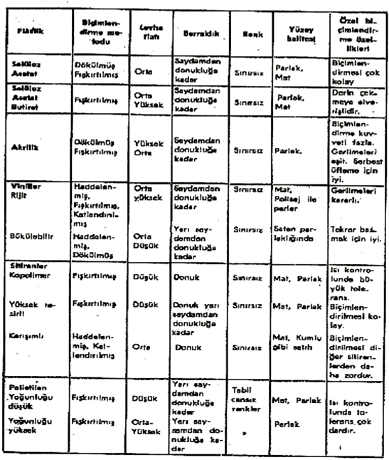
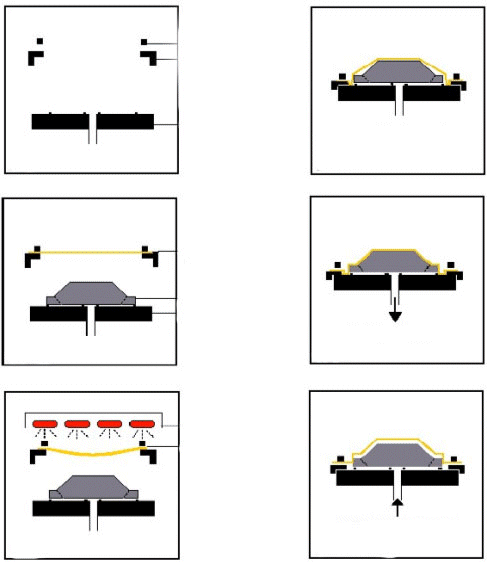
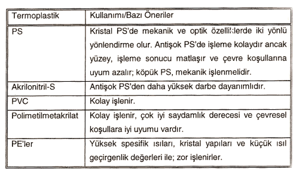
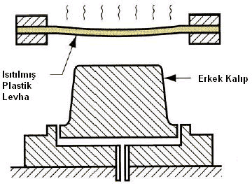

|
3. EKTRÜZYON ÝLE FÝLM ve LEVHA ÜRETÝMÝ
Sýcak biçimlendirme iþleminde imalatýn tabiatý bakýmýndan yalnýz levha halindeki termoplastikler kullanýlabilir. Herhangi bir termoplastik levha biçimlendirilebilir, fakat daha ziyade deðiþik özelliklere sahip belirli olanlar kullanýlýr. imal edilen levha plastiklerin biçimlendirme özelliði, büyük rol oynar. Pek çok biçimlendirme iþlemleri, haddeden geçirilmiþ veya basýlmýþ levhalardan yapýlýr; çünkü bunlarýn fiyatý çok düþüktür. Bu gibi levhalarýn, ýsýtýldýðý zaman bir doðrultuda çekme eðilimi vardýr ve bunlarý ýsýtýrken ve biçimlendirirken bir çerçeve veya plaka içinde kuvvetle tutmak gerekir. Dökülmüþ levhalar, ýsýtýlma esnasýnda çok az veya hiç biçim deðiþtirmezler ve bunlarla yüzey görüntüsü çok berrak ve iç gerginlikleri daha az olan parçalar imal edilir. Fakat bunlar pahalýdýr ve yalnýz bu özelliklerin önemli olduðu yerlerde kullanýlýr (1).
Tablo-1: Termoplastik Levhalar Ýçin Rehber (1).

4. VAKUM TEKNOLOJÝSÝ
4.1 Vakum Kavramý
Vakum, latin kökenli bir kelime olup (vacuus) boþluk anlamýna gelmektedir. Amerikan Vakum Topluluðu (AVS) 'nun 1958 yýlýnda yapmýþ olduðu tanýmýna göre vakum, basýncý atmosferik basýnç deðerinin altýnda olan gazlarýn doldurduðu kapalý hacim olarak tanýmlanmaktadýr. Bu tanýmda sözü edilen basýnç deðerine karþý gelen birim hacimdeki gaz moleküllerinin sayýsý, deniz seviyesinde ve 22 oC sýcaklýkta bulunan 2,5 x 1025 molekül/m3'den daha düþüktür. Dolayýsý ile vakum sözcüðü, basýnçlarý bu deðerin altýnda kalan gazlarýn oluþturduklarý ortamlarý ifade etmede kullanýlmaktadýr (2).
5. VAKUMLA BÝÇÝMLENDÝRME YÖNTEMLERÝ
Termoplastik levhalarýn þekillendirilmesinde uygulanýr. Kalýp üzerine tutturulan ve yumuþama noktasýna kadar ýsýtýlan plastik levhaya, vakum yöntemiyle istenilen þeklin verilmesi esasýna dayanýr.
Isýyla yumuþayan plastik bir levha bir çerçeve içine, ya etrafýndan sýkýlarak baðlanýr ya da yalnýzca kalýbýn üzerine oturtularak tespit edilir. Levha yumuþayýncaya kadar fakat erimeyecek þekilde ýsýtýlýr. Yumuþak plastik levha kalýbýn çevresine iyice yapýþtýrýlarak sýzdýrmazlýk saðlanýr. Kalýp boþluðundaki hava emilerek vakum elde edilir. Atmosfer basýncý, ýsýtýlmýþ levhaya bastýrarak onun kalýbýn þeklini almasýna sebep olur. Levha soðuyup sertleþinceye kadar vakum uygulanýr. Biçimlendirilen parçalar kalýptan alýnarak düzeltilir (1).
Isýl þekillendirmede plastik levha, ýsý ile yumuþatýlmýþ durumda kalýba sýkýca baðlanýr. Ara boþluktaki hava emilerek oluþturulan vakum vasýtasý ile, ýsýtýlmýþ levha; aþaðýya, kalýbýn üzerine çekilir ve kalýbýn þeklini almasý saðlanýr (1).

Þekil-1 Vakum Biçimlendirme Yöntemi (4).
Isýl þekillendirme ile, hemen her tür termoplastikler iþlenebilir. Ancak,
. Çabuk ýsýnma ve soðuma saðlayan, özgül ýsý deðeri düþük, tercihen amorf plastikler,
. Yüksek ýsýl iletkenliði olan köpük malzemeler bu teknik için uygun deðildir. Buna karþýlýk,
. Yüksek molekül aðýrlýklý (böylece yüksek viskozite deðerli olup aþýrý incelme ve yýrtýlma yapmayan) polimerlerin bu yöntem için en uygun olduklarýný belirtmek gerektir (3).
Isýl þekillendirme ile iþlemede en yaygýn kullanýlan bazý termoplastikler;
Tablo-2: Termoplastikler (3).

5.1 Erkek Kalýpla Vakumlu Biçimlendirme
Bu metotla cidar kalýnlýklarý daha muntazam olarak elde edilir ve derinliði büyük çekme iþlemleri yapýlýr. Uygun bir konstrüksiyonla parçanýn yüksekliði minimum taban ölçüsünün iki katý kadar olabilir. Parçanýn iç kýsmýnda çizgiler meydana gelecektir. Bu metoda birbirine yakýn yerleþtirilmiþ bir seri çýkýntýsý olan parçalarýn yapýmý içi uygun deðildir; çünkü plastiðin bir çýkýntýdan diðer bir çýkýntýya gevþek olarak köprü yapma eðilimi vardýr (3).
Erkek kalýpla plastik ve vakum üretici arasýnda sýzdýrmazlýk temin edilmelidir. Parçalarý kolayca çýkarmak için erkek kalýplar en aþaðý 2 - 5 derece konik olarak yapýlmalýdýr.

Þekil-2 Erkek Kalýpla Vakumlu Biçimlendirme (6).
|